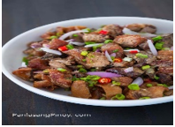
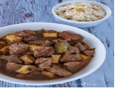
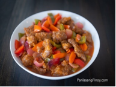

Lechon Belly Roll
Ingredients:
- 5 lbs. pork belly whole slab
- 6 tablespoons Knorr Savor Rich Pork Seasoning
- 1/2 cup soy sauce
- 1 pice onion
- 3 heads garlic
- 2 bunches scallions
- 3 Stalks lemongrass
- 1/2 cup cooking oil
Spicy Vinegar Dip:
- 1 cup white vinegar
- 2 tablespoons soy sauce
- 1 piece red onion chopped
- 6 cloves garlic crushed and chooped
- 1/2 teaspoon white sugar
- 1 tablespoom whole peppercorn
- 6 pieces Thai chili chopped
Instructions:
- Rub 5 tablespoons Knorr SavorRich on the meat part of the pork. Spread evenly. Turn the pork over and rub the remaining SavorRich and soy sauce on the skin of the pork. Let it marinate for 30 minutes
- Preheat oven to 350F
- Chop the scallion, onion, and garlic. Crush the lemon grass and slice into pieces. Place all the garlic and onion over the belly. Add scallion and lemongrass. Roll the belly and secure by tying kitchen twine.
- Rub oil all over the belly roll. Pour 4 cups of water in a roasting pan and put remaining scallions and lemongrass. Arrange a roasting rack over the pan and place the rolled belly on the rack. Roast for 1 hour
- Prepare the basting sauce by combining 2 tablespoons soy sauce and ¼ cup oil. Mix well. Brush all over the pork.
- Increase the heat to 360F. Continue to roast for another hour. Note: add more water on the pan if needed.
- Increase the heat to 370F. Brush with basting sauce. Roast for 1 hour more.
- Increase heat to 400F. Continue to roast until the skin gets very crispy. Remove from the oven and let the pork belly cool down
- Make the dipping sauce by combining all the sauce ingredients as listed above. Microwave for 30 seconds.
- Remove the twine from the belly roll and chop into serving pieces. Serve with spicy vinegar dip.
- Share and enjoy!
Pinoy Pork and Chicken Curry
Ingredients:
- 1 lb. chicken cut into serving pieces
- 1 lb. pork belly cubed
- 1 piece Knorr Pork Cube
- 1 piece potato cubed
- 1 piece red bell pepper sliced
- 1 piece green bell pepper sliced
- 1 1/2 tablespoons curry powder
- 3/4 cup green peas frozen
- 1 piece onion chopped
- 4 cloves garlic chopped
- 1 thumb ginger minced
- 2 cups coconut milk
- 3/4 cup water as needed
- Patis and ground black pepper to taste
- 4 tablespoons cooking oil
Instruction:
- Heat oil in a coking pot
- Pan-fry potato for 1 minute per side. Remove from the pot and place in a clean plate.
- Pan-fry chicken for 1 to 1 ½ minute per side. Remove and set aside.
- Using the remaining oil, saute onion, garlic, and ginger.
- Once the onion softens, add pork. Cook until outer part turns light brown.
- Pour-in coconut milk. Let boil.
- Add Knorr Pork Cube. Stir. Cover the pot and boil pork using low to medium heat until tender. Add water as needed.
- Put the pan-fried chicken into the pot. Cook for 15 to 18 minutes.
- Add pan-fried potato, bell peppers, and green peas. Cook for 5 minutes.
- Season with patis and ground black pepper. Transfer to a serving plate. Serve.

Crispy Dinakdakan Recipe
Ingredients:
- 3/4 lb pork belly
- 3/4 lb pig ears
- 6 ounces pork liver sliced
- 2 pieces and onions sliced
- 1/2 cup green onions choppedd
- 6 pieces Thai chili pepper chopped
- 2 teaspoons whole peppercorn
- 6 pieces dried bay leaves
- 4 cloves garlic crushed
- salt to taste
- 3 cups cooking oil
- 6 Ccups water
Dressing Ingredients;
- 3/4 cup Lady's choice Mayonnaise
- 1/4 cup soy sauce
- 5 pices Calamansi
- 1/2 teaspoon salt
- 1/4 teaspoon ground black pepper
Intructions:
- Tenderize the pork belly and pig ears. Do this by boiling water in a cooking pot. Add whole peppercorn, dried bay leaves, and garlic. Pig ears and pork belly into the pot. Cover and boil between low to medium heat for 45 to 60 minutes. Drain the liquid, set aside.
- Prepare the liver by rubbing with salt. Heat 2 tablespoons oil in a pan. Cook the liver by pan-frying until brown. Set aside.
- Heat 3 cups cooking oil in a deep fryer or deep cooking pot. Rub salt all over the boiled pig ears and belly
- Deep-fry the ears for 10 minutes. Remove from the fryer and let it rest for 5 minutes. Fry again for another 10 minutes. Set aside.
- Deep-fry pork belly for 8 minutes. Remove from the fryer and let it rest for 5 minutes. Deep-fry again for 5 minutes or until crispy. Set aside.
- Prepare the dressing by combining all dressing ingredients in a bowl. Stir until smooth.
- Chop the ears and belly into bite-size pieces. Place in a large bowl and then add the fried liver. Toss. Add onion, green onion, and chili pepper. Mix until well blended.
- Pour half of the dressing into the bowl. Toss.
- Transfer to a serving plate. Serve. Share and enjoy!

Pork Adobo with Tokwa and Tausi and Garlic Fried Rice Adobo
Ingredients:
Pork Adobo with Tokwa and Tausi
- 1 1/2 lbs. pork cubed
- 2 pieces tofu cubed and fried
- 1 teaspoon brown sugar
- 10 cloves garlic crushed
- 3 tablespoons salted black beans
- 4 pieces dried bay leaves
- 1 teaspoon whole peppercorn
- 5 tablespoons soy sauce
- 4 tablespoons vinegar
- 1 1/2 cups water
- 5 tablespoons cooking oil
Garlic Fried Rice Adobo
- 3 cups leftover rice
- 1 teaspoon salt
- 3 tablespoons garlic oil
- 1 1/2 tablespoons toasted garlic
- 3 tablespoons adobo sauce
Instructions:
- Prepare the toasted garlic by heating oil in a pan. Add crushed garlic while oil is heating up. Cook in low heat until garlic turns golden brown. Set aside. Note: the oil used to cook the garlic turns to garlic oil.
- Heat half of the garlic oil in a pan. Saute pork until light brown.
- Pour soy sauce and vinegar. Let boil.
- Add salted black beans and water. Cover and cook for 40 minutes or until pork gets tender.
- Add fried tofu and sugar. Stir and cook for 3 minutes. Transfer to a serving plate.
- Prepare the fried rice by combining salt and rice. Mix gently
- Heat the remaining toasted garlic and oil in a pan. Add rice. Pour-in adobo sauce. Stir-fry for 3 to 5 minutes.
- Serve with pork adobo. Enjoy!

Sweet and Sour Pork
Ingredients:
- 1 lb pork sliced
- 1 piece red bell pepper
- 1 piece green bell pepper
- 3 tablespoons soy sauce
- 1 piece red onion wedged
- 1 piece carrot sliced
- 1/2 cup all-purpose flour
- 3 tablespoons cornstarch
Sweet and Sour Sauce
- 1 1/4 cup water
- 3 1/2 tablespoons vinegar
- 5 tablespoons tomato ketchup
- 4 tablespoons white sugar
- Salt and pepper to taste
Instructions:
- Place the pork loin in a bowl. Add soy sauce (you may also add salt if desired). Marinate for 10 minutes.
- Pour the cooking oil in a pan then apply heat.
- Combine the flour and cornstarch in a bowl then mix until both ingredients are evenly distributed.
- Dip the marinated pork in beaten egg then on the flour and cornstarch mixture.
- Deep fry the pork (coated with cornstarch and flour) for 10 minutes or until the color turns medium brown. Set aside.
- Heat a separate pan then pour-in the sweet and sour sauce ingredients. Let boil.
- Add the carrots. Cook for 3 minutes.
- Put-in the onions and bell pepper (green and red). Cook for 4 minutes (add extra water as needed).
- Add the deep-fried pork loin and stir. Cook for 2 minutes. Season with salt and pepper.
- Transfer to a serving dish and serve hot. Share and enjoy!
Pochero with Pork and Beans
Ingredients:
- 2 lbs pork belly cubed
- 1 piece Knorr Pork Cube
- 15 ounces pork and beans
- 1 piece potato cubed
- 2 pieces saba banana sliced
- 1/4 head cabbage sliced
- 1 bunch pechay
- 18 pieces long green beans
- 1 piece Chorizo de Bilbao sliced
- 1 piece tomato cubed
- 1 piece onion chopped
- 4 cloves garlic chopped
- 3 cups water
- Patis and ground black pepper to taste
- 3 tablespoons cooking oil
Instructions:
- Heat oil in a cooking pot. Saute onion and garlic.
- Add pork once the onion softens. Saute until the color turns light brown.
- Add Knorr Pork Cube. Stir and then add chorizo. Cook for 1 minute.
- Pour water. Let boil. Cover the pot and adjust heat between low to medium. Cook for 45 to 60 minutes or until pork gets tender. Note: add more water as needed.
- Put potato and saba banana into the pot. Cover and continue to boil for 5 minutes.
- Pour pork and beans into the pot. Cook for 3 minutes.
- Add long green beans, cabbage, and pechay. Cook for 2 to 3 minutes.
- Season with patis and ground black pepper.
- Transfer to a serving bowl. Enjoy!